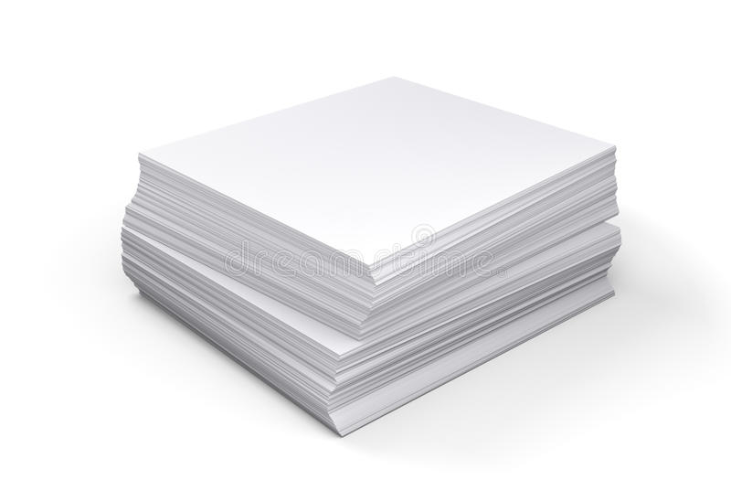

The first scraps of ancient paper were discovered at the excavations. Their age is determined by the beginning of the BC period. According to the ancient Chinese chronicles (which is confirmed by numerous finds, as a result of excavations in China), in 105 AD, the first paper was received by Cai Lun. His papermaking technique was quite simple. He took hemp, wood ash, and mulberry fibers, ground them, and mixed them with water. The resulting raw materials were poured into a sieve and ground with stones to a homogeneous thick mass. After drying, it formed strong sheets of paper. Before its trial production, the country produced paper only from hemp or silk.
People began to feel the need for considerable volumes of paper, so the first paper-making semi-automatic machines began to appear. The main delay in the production of paper was the scooping out of raw materials. The paper machine was able to solve this problem. Invented by L. Robert in 1799, the machine had a continuous grid stretched over two rollers, which, when rotated, could filter the raw materials from the water. ancient paperworkers Over the years, the paper making machine has been periodically improved and refined. Each paperworker contributed their own know-how to the mechanisms. In the 19th century, it was already a multifunctional machine that performs continuous processes for the production of paper. Such a machine produced quite good quality paper, much like its modern counterparts.
These days, paper factories are located in various parts of the world (but they pack it the same way everywhere — do you know how many packs of paper there are in a box?). In Europe, production is most concentrated in Austria and Slovakia. There are also several factories in Russia. Large production facilities are also present in Finland. It is worth saying that the history of paper creation is quite long and diverse. Both the final products and the manufacturing machines have undergone many drastic changes. Despite the production of huge batches and the continuous operation of huge factories, the value of paper remains high today.
When were the first pieces of paper discovered?
How paper used to be made using Cai Lun technology?
In what century was there a multifunctional machine that performs continuous processes for the production of paper?
Are there any paper manufacturing plants in Russia?
In which city are there large paper production facilities?